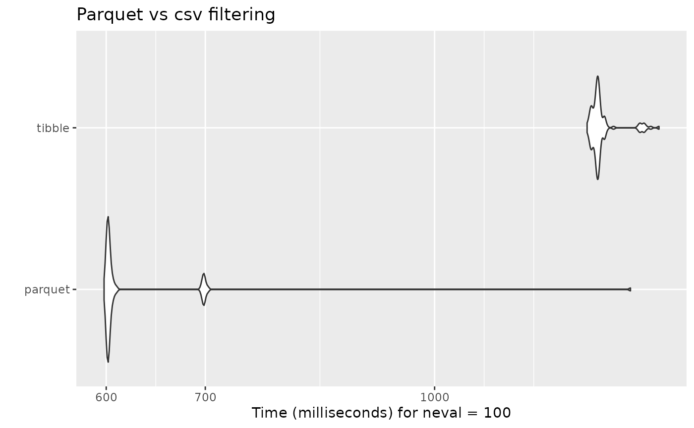

Apache Parquet is an open-source data storage format that efficiently
handles large complex data. In contrast to CSV files,
.parquet files are column-oriented, making them storage
efficient. Additionally, the columnar storage of parquet files avoids
having to read the full datasets in memory. This last feature of parquet
files makes them ideal to work in R with larger than memory
datasets.
Efficiently storing and processing large individual-level data is one important challenge that researchers commonly face. Although parquet files (or other column-oriented tabular data) are becoming more popular in the data-analysis world, they are not as commonly used in research. For instance, it is still common for Norwegian register microdata (e.g. NPR) to be delivered as chunked CSVs.
To enable users to work with larger-than-memory data within
regtools, the functions read_diag_data()
read_demo_data() filter_diag_data()
filter_demo_data() support parquet files. This is
particularly helpful to speed-up the filtering steps in very large data
sets. In the next example, it is shown how to write/read parquet
datasets and use them as part of the regtools analytical
pipeline.
Writing parquet files
First, we generate a simulated diagnostic dataset with ~8.3 million rows:
simulated_list <- synthetic_data(
population_size = 2100000,
prefix_ids = "P0",
length_ids = 8,
family_codes = c("F45", "F84"),
pattern = "increase",
prevalence = .023,
diag_years = c(2012:2015),
sex_vector = c(0, 1),
y_birth = c(2010:2015),
filler_codes = "F",
filler_y_birth = c(2000:2009),
invariant_codes = list("innvandringsgrunn" = c("ARB", "NRD", "UKJ")),
invariant_codes_filler = list("innvandringsgrunn" = c("FAMM", "UTD")),
seed = 12
)
#> ! Varying query and varying codes arguments are empty. The varying dataset will not be generated.
#> ℹ Creating relevant cases with the following characteristics:
#> • Population size = 2100000
#> • Prefix IDs = P0
#> • Length IDs = 8
#> • Diagnostic relevant codes = F45 and F84
#> • Pattern of incidence = increase
#> • Prevalence = 0.023
#> • Diagnostic years = 2012, 2013, 2014, and 2015
#> • Incidence =
#> • Coding sex = 0 and 1
#> • Relevant years of birth = 2010, 2011, 2012, 2013, 2014, and 2015
#> ℹ Creating filler cases with the following characteristics:
#> • Filler diagnostic codes = F
#> • Filler years of birth = 2000, 2001, 2002, 2003, 2004, 2005, 2006, 2007, 2008,
#> and 2009
#> • Pattern for filler incidence = 'random'
#> • Number of filler cases to generate = 1907227
#> ! This process can take some minutes...
#> ✔ Succesfully generated diagnostic and time-invariant datasets!
new_df <- simulated_list$datasets$diag_dfWe proceed to save the diagnostic dataset as both as .csv and
.parquet files. In the case of parquet files, we will use the function
arrow::write_dataset():
# Save as csv
td <- withr::local_tempdir()
tp_csv <- file.path(td, "new_df.csv")
write.csv(new_df, tp_csv, row.names = FALSE)
# Save as parquet
tp_parquet <- file.path(td, "new_df.parquet")
arrow::write_dataset(new_df, path = tp_parquet, format = "parquet")For very large datasets, it is also possible to partition the data and save it across different parquet files. There are no defined guidelines on how to partition data, as it is highly dependent on the type of data and structure you have. As a general rule, it is recommended to avoid creating very small (<20MB) and very large partitions (>2GB). Additionally, it is a good idea to try to partition by any variable you will use to filter by.
If we are planning to later use the filter_diag()
function to filter only the diagnosis given in the years 2012 and 2013,
we could partition by grouping our data by the variable
diag_year:
tp_parquet_part <- file.path(td, "new_df_partition.parquet")
new_df |>
dplyr::group_by(diag_year) |>
arrow::write_dataset(path = tp_parquet_part, format = "parquet")Reading parquet files
To read a parquet dataset, it is possible to use the
read_diag_data() as you would with a .csv or .sav
files:
rm(new_df)
l_path <- withr::local_tempfile(fileext = ".log", lines = "Parquet log")
diag_parquet <- read_diag_data(
file_path = tp_parquet,
id_col = "id",
date_col = "diag_year",
code_col = "code",
log_path = l_path)
#> ℹ You have provided a parquet file or database. Due to the characteristics of these data objects, the console output and logging will provide minimal information.
#> Reading /tmp/Rtmpt63zZk/file8ed24a7f3ec5/new_df.parquet file...
#> ✔ Successfully read file: /tmp/Rtmpt63zZk/file8ed24a7f3ec5/new_df.parquet
#> Checking column requirements:
#> ✔ ID column
#> ✔ Code column
#> ✔ Date column
#>
#> ────────────────────────────────────────────────────────────────────────────────
#> Diagnostic dataset successfully read and columns validated
#>
#>
#> ── Data Summary ────────────────────────────────────────────────────────────────
#> ℹ Number of rows: 8391376. Number of columns: 3.
#>
#>
#> FileSystemDataset with 1 Parquet file
#> 8,391,376 rows x 3 columns
#> $ id <string> "P023206282", "P023206282", "P023206311", "P023206311", "P02…
#> $ code <string> "F381", "F421", "F176", "F654", "F6698", "F1073", "F0124", "…
#> $ diag_year <int32> 2015, 2014, 2015, 2012, 2013, 2013, 2014, 2014, 2013, 2015, …Filtering
As an output from read_diag_data() will be ArrowObject
(Dataset) that you can then pass to the function
filter_diag() to efficiently filter any relevant
observations:
filtered_parquet <- filter_diag_data(
diag_parquet,
pattern_codes = c("F84", "F45"),
classification = "icd",
id_col = "id",
code_col = "code",
date_col = "diag_year",
diag_dates = c(2012),
rm_na = TRUE,
log_path = l_path)
#> ℹ Your data is a Arrow dataset, due to nature of this data object the output in the console and log will be minimal.
#> Checking that code exists in ICD-10 or ICPC-2 code list...
#> ✔ Selected codes/pattern are valid: F450, F451, F452, F453, F4530, F4531, F4532, F4533, F4534, F4538, F454, F458, F459, F840, F841, F842, F843, F844, F845, F848, F849
#> Filtering data by selected codes...
#> Filtering observations by date of diagnosis...
#> ! The dataset has no NAs or they are coded in a different format.
#>
#> ────────────────────────────────────────────────────────────────────────────────
#> Diagnostic dataset successfully filtered
#>
#> ℹ Filtered 8352662 rows (99.5% removed)
#>
#> ── Data Summary ────────────────────────────────────────────────────────────────
#>
#> ── After filtering:
#> ℹ Remaining number of rows: 38714
#> ℹ Remaining number of columns: 3
#> ℹ Unique IDs in dataset: 38459
#> ℹ Unique codes in dataset: 21
#> ℹ Codes in dataset: "F458", "F459", "F844", "F4538", "F450", "F454", "F4531", "F452", "F4533", "F4532", "F845", "F842", "F840", "F453", "F4534", "F843", "F841", "F4530", …, "F451", and "F849"
#>
#> Rows: 38,714
#> Columns: 3
#> $ id <chr> "P023214344", "P023220089", "P023220706", "P023222447", "P02…
#> $ code <chr> "F843", "F458", "F4530", "F848", "F4533", "F844", "F844", "F…
#> $ diag_year <int> 2012, 2012, 2012, 2012, 2012, 2012, 2012, 2012, 2012, 2012, …Performance
As it is to be expected, the filtering done on the parquet dataset is in average double as fast than the regular filter done on a tibble or data frame object:
diag_tibble <- read_diag_data(
file_path = tp_csv,
id_col = "id",
date_col = "diag_year",
code_col = "code",
log_path = l_path)
mb_filter <- microbenchmark::microbenchmark(
parquet =
filter_diag_data(
diag_parquet,
pattern_codes = c("F84", "F45"),
classification = "icd",
id_col = "id",
code_col = "code",
date_col = "diag_year",
diag_dates = c(2012),
rm_na = TRUE,
log_path = l_path),
tibble =
filter_diag_data(
diag_tibble,
pattern_codes = c("F84", "F45"),
classification = "icd",
id_col = "id",
code_col = "code",
date_col = "diag_year",
diag_dates = c(2012),
rm_na = TRUE,
log_path = l_path),
check = NULL
)#> Unit: milliseconds
#> expr min lq mean median uq max neval
#> parquet 598.0024 601.0389 625.2219 602.1837 605.5399 1356.172 100
#> tibble 1267.7111 1282.5334 1297.1261 1288.8070 1293.7682 1417.743 100
#> Warning: `aes_string()` was deprecated in ggplot2 3.0.0.
#> ℹ Please use tidy evaluation idioms with `aes()`.
#> ℹ See also `vignette("ggplot2-in-packages")` for more information.
#> ℹ The deprecated feature was likely used in the microbenchmark package.
#> Please report the issue at
#> <https://github.com/joshuaulrich/microbenchmark/issues/>.
#> This warning is displayed once every 8 hours.
#> Call `lifecycle::last_lifecycle_warnings()` to see where this warning was
#> generated.